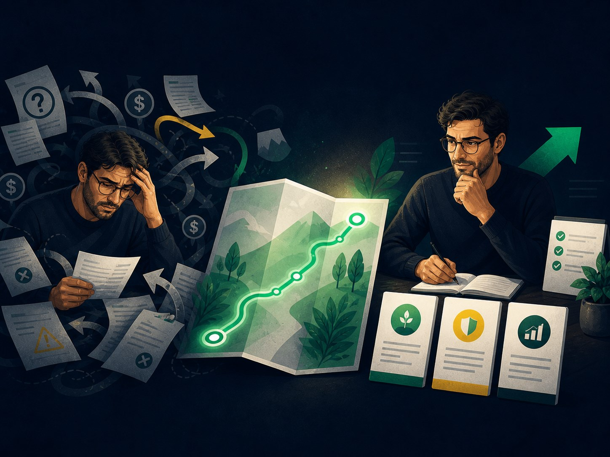
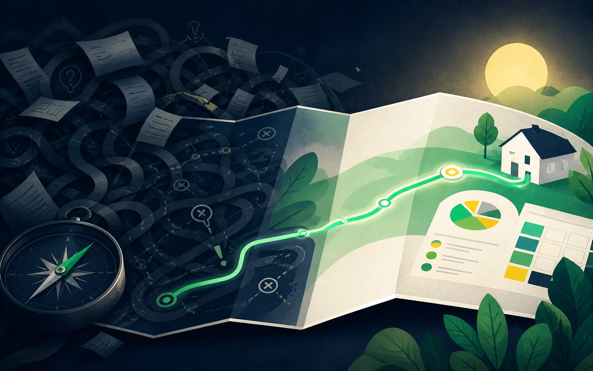
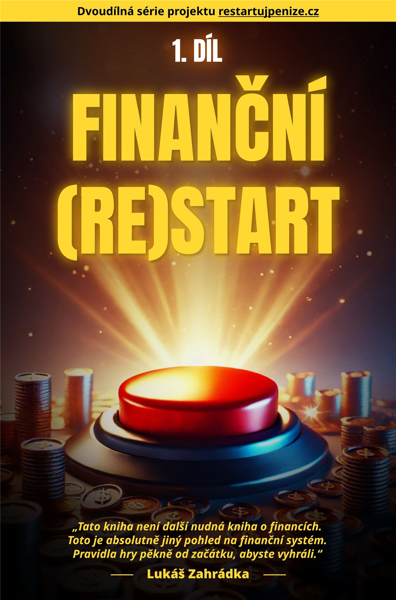
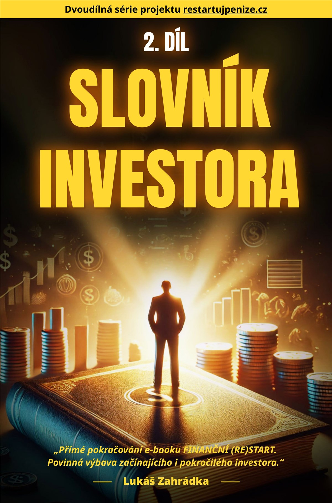

Co Restartuj Peníze není
Rychlá zkratka k bohatství ani prodej konkrétního produktu.
- žádné signály, co právě koupit nebo prodat
- žádné sliby jistých výnosů a rychlého zbohatnutí
- žádný tlak, umělý časovač ani následný prodejní hovor
Mapa ven z finančního zmatku
Tady najdete mapu ven: srozumitelné základy, slovník pojmů a praktické průvodce pro situaci, kterou právě řešíte.
13 PDF • jednorázová platba • bez předplatného • bez následného prodejního hovoru

Nezávislý vzdělávací projekt
Restartuj Peníze není projekt banky, poradenské sítě ani investiční platformy. Za zpracování odpovídá podnikatel Lukáš Zahrádka, který složitá témata převádí do přehledných souvislostí, kontrolních otázek a praktických postupů použitelných i bez ekonomického vzdělání.
Nejste špatní na finance.
Jen se snažíte rozhodovat bez přehledné mapy.
Problém není nedostatek informací
Jedna rada říká šetřit, druhá investovat. Smlouva je plná pojmů. Každý nabízí jiné řešení a vy nevíte, podle čeho ho posoudit.
Jasné vymezení
Co Restartuj Peníze není
Co Restartuj Peníze je

Finanční štít ukáže časté podvody. Finanční (Re)Start vytvoří základ, Slovník investora pomůže s pojmy a šest praktických průvodců otevřete právě tehdy, když řešíte konkrétní rozhodnutí.
Jedna jasná hlavní volba
Kompletní knihovna spojuje ochranu před podvody, řešení konkrétních situací i pevné základy. Pokud celý systém nepotřebujete, níže si vyberete menší vstup.
Jedna knihovna pro ochranu před podvody, řešení každodenních problémů i pochopení finančních souvislostí.




Tři sady samostatně 2 070 Kč
1 490 KčUšetříte 580 Kč + získáte bonus Mindset13 PDF • jednorázová platba • bez předplatnéhoMenší vstup podle aktuální potřeby
Čtyři krátké průvodce pro chvíli, kdy potřebujete rychle poznat varovné signály a bezpečně si ověřit další krok.
Při nákupu zvlášť 396 Kč
290 KčUšetříte 106 KčŠest průvodců pro chvíle, kdy potřebujete vyřešit jeden konkrétní problém a nechcete hledat odpověď v celé knihovně.
Při nákupu zvlášť 1 194 Kč
790 KčUšetříte 404 KčDvě hlavní knihy pro člověka, který nechce jen hasit jednotlivé problémy, ale potřebuje pochopit celý systém.
Při nákupu zvlášť 1 180 Kč
990 KčUšetříte 190 KčPorovnání vychází pouze ze skutečného součtu samostatných knih a sad. Digitální doručení, bez předplatného a bez následného prodejního hovoru.
Finanční štít • 99 Kč za titul
Pomůže vám s rodiči nebo prarodiči projít typické scénáře nátlaku a domluvit si jednoduchý postup dřív, než někomu předají peníze.
99 KčNaučíte se ověřit podezřelý profil, reklamu nebo video, než kliknete, odpovíte nebo pošlete peníze.
99 KčZískáte kontrolní otázky pro nabídky „bez rizika“ a snáz poznáte, kdy výnos stojí hlavně na tlaku a neprůhledných slibech.
99 KčRozpoznáte znaky falešného e-mailu, přihlášení nebo podpory a budete vědět, jak odkaz bezpečně ověřit.
99 KčPraktické e-booky • 199 Kč za titul
Získáte jednoduchou brzdu proti tlaku a FOMO, abyste nepodepsali nebo nekoupili něco jen proto, že vás někdo tlačí k rychlému „ano“.
199 KčSrovnáte brokery podle konkrétních kritérií a snáz odhalíte poplatky, omezení nebo varovné signály ještě před odesláním peněz.
199 KčUvidíte, kam peníze skutečně mizí, a sestavíte si plán výdajů, rezervy a cílů, který lze dlouhodobě dodržet.
199 KčPojmenujete svou hodnotu, připravíte si argumenty pro vyšší odměnu a objevíte konkrétní cesty, kde lze příjem posunout.
199 KčNajdete pravidelné platby a poplatky, které stojí za kontrolu, a získáte postup pro porovnání nebo vyjednání lepších podmínek.
199 KčDostanete otázky, které pomohou odlišit skutečné vysvětlování od prodejního tlaku dřív, než podepíšete nevýhodnou smlouvu.
199 KčHlavní knihy • 590 Kč za titul
Uspořádá finanční chaos do jasného pořadí kroků • 225 stran
590 KčPomůže rozumět nabídkám, smlouvám a investičním pojmům • 224 stran
590 KčJádro celé knihovny
Když nevíte, co řešit jako první, kniha vám uspořádá rozpočet, rezervu, dluhy a investování do srozumitelného pořadí.
Když vás odborné pojmy staví do nevýhody, rychle si ověříte, co znamenají a na co se potřebujete doptat.
Šest průvodců pro konkrétní situace
Otevřete e-book k tématu, které právě řešíte. Každý titul má svou skutečnou obálku, přesný účel a je součástí kompletního balíčku.
Praktický e-book
Získáte jednoduchou brzdu proti tlaku a FOMO, abyste nepodepsali nebo nekoupili něco jen proto, že vás někdo tlačí k rychlému „ano“.
Praktický e-book
Srovnáte brokery podle konkrétních kritérií a snáz odhalíte poplatky, omezení nebo varovné signály ještě před odesláním peněz.
Praktický e-book
Uvidíte, kam peníze skutečně mizí, a sestavíte si plán výdajů, rezervy a cílů, který lze dlouhodobě dodržet.
Praktický e-book
Pojmenujete svou hodnotu, připravíte si argumenty pro vyšší odměnu a objevíte konkrétní cesty, kde lze příjem posunout.
Praktický e-book
Najdete pravidelné platby a poplatky, které stojí za kontrolu, a získáte postup pro porovnání nebo vyjednání lepších podmínek.
Praktický e-book
Dostanete otázky, které pomohou odlišit skutečné vysvětlování od prodejního tlaku dřív, než podepíšete nevýhodnou smlouvu.
Vytvoříte si osobní pravidla, která pomáhají brzdit impulzivní nákupy, FOMO a chaotické změny plánu ve chvíli, kdy emoce přebírají kontrolu.
Uvnitř skutečných knih
Kliknutím otevřete celou stranu ve vysokém rozlišení a můžete si prohlédnout sazbu, obrázky i způsob vysvětlení.
Zpětná vazba prvních čtenářů
Konkrétní dojmy prvních lidí, kteří dostali materiály k přečtení. Nejde o statistické hodnocení ani slib výsledku — každý čtenář začíná v jiné situaci.
„Průvodce do světa investování, který od základu všechno vysvětlí. Obrázky, struktura — je to čtivé.“
„Je to víc zaměřené na praxi. Ve škole se člověk učí, ale často neví, jak informace použít.“
„Všechno to usazuje a dává lidem jistotu, aby se mohli ve financích opřít sami o sebe.“
Metodika Restartuj Peníze
Obsah nevzniká jako sbírka izolovaných rad. Každé téma prochází stejným postupem: pojmenovat situaci, vysvětlit souvislosti a převést je do otázek a kroků, které si můžete sami projít.
Nejdřív se pojmenuje problém, rozhodnutí nebo riziko, které člověk právě řeší — bez zbytečné odborné omáčky.
Pojmy, možnosti a rizika jsou poskládané do souvislostí, aby bylo jasné, co řešit nejdřív a proč.
Téma končí otázkami, varovnými signály a postupem, podle kterého si můžete další rozhodnutí sami prověřit.
Nadčasové principy oddělujeme od údajů, které se mění. Aktuální sazby, regulaci a podmínky poskytovatelů je vždy potřeba ověřit v oficiálních zdrojích.
Odpovědnost za obsah
Restartuj Peníze sestavuje Lukáš Zahrádka, podnikatel s více než 15 lety praxe a zkušeností s vedením marketingové firmy. Dlouhodobě se pohybuje v prostředí, kde je potřeba porovnávat nabídky, hlídat náklady, rozumět smlouvám a nést důsledky vlastních rozhodnutí. Tyto zkušenosti využívá k uspořádání finančních témat — ne k doporučování konkrétních produktů.
Časté otázky
Přesně víte, co kupujete — a také co tento balíček neslibuje.
Ano. Finanční (Re)Start začíná od základů. Slovník investora používáte jako průběžnou referenci a kratší e-booky otevíráte podle situace, kterou právě řešíte.
Ano. Tituly z Finančního štítu stojí samostatně 99 Kč, praktické e-booky 199 Kč a každá hlavní kniha 590 Kč. Pokud chcete více témat, sada nebo kompletní knihovna vychází výhodněji.
Pouze z reálných cen jednotlivých titulů. Finanční štít stojí 290 Kč místo 396 Kč, Finanční první pomoc 790 Kč místo 1 194 Kč a Finanční mapa 990 Kč místo 1 180 Kč. Všechny tři sady samostatně stojí 2 070 Kč, kompletní knihovna 1 490 Kč.
Ne. Začněte tím, co právě řešíte: ochranou před podvodem, konkrétním problémem nebo hlavní knihou. Smyslem balíčku je mít spolehlivou knihovnu, ke které se můžete vracet.
Informace jsou uspořádané do jednoho návazného systému. Nemusíte skládat základy z desítek článků a zároveň máte praktické kontrolní otázky pro běžné situace.
Ne. Materiály vysvětlují pojmy, rizika a kontrolní otázky. Neříkají vám, co máte koupit, a nenahrazují individuální finanční, právní ani daňové poradenství.
Principy a kontrolní otázky jsou navržené jako dlouhodobě použitelné. Konkrétní sazby, regulaci a podmínky poskytovatelů je vždy potřeba ověřit v aktuálních oficiálních zdrojích.
Jde o digitální e-booky ve formátu PDF pro počítač, tablet i telefon. Nejde o tištěné knihy.
Po úspěšné platbě vám přijde e-mail s přístupem nebo odkazy ke stažení. V této náhledové verzi ještě platební krok není aktivní.
Ne. Cena je jednorázová a nevzniká žádná automaticky obnovovaná platba.
Kompletní knihovna • 13 PDF
1 490 Kč